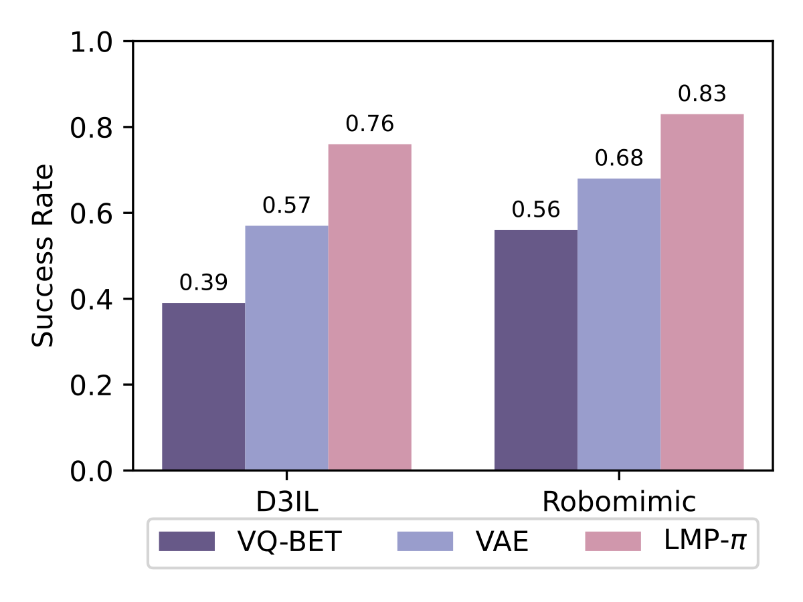
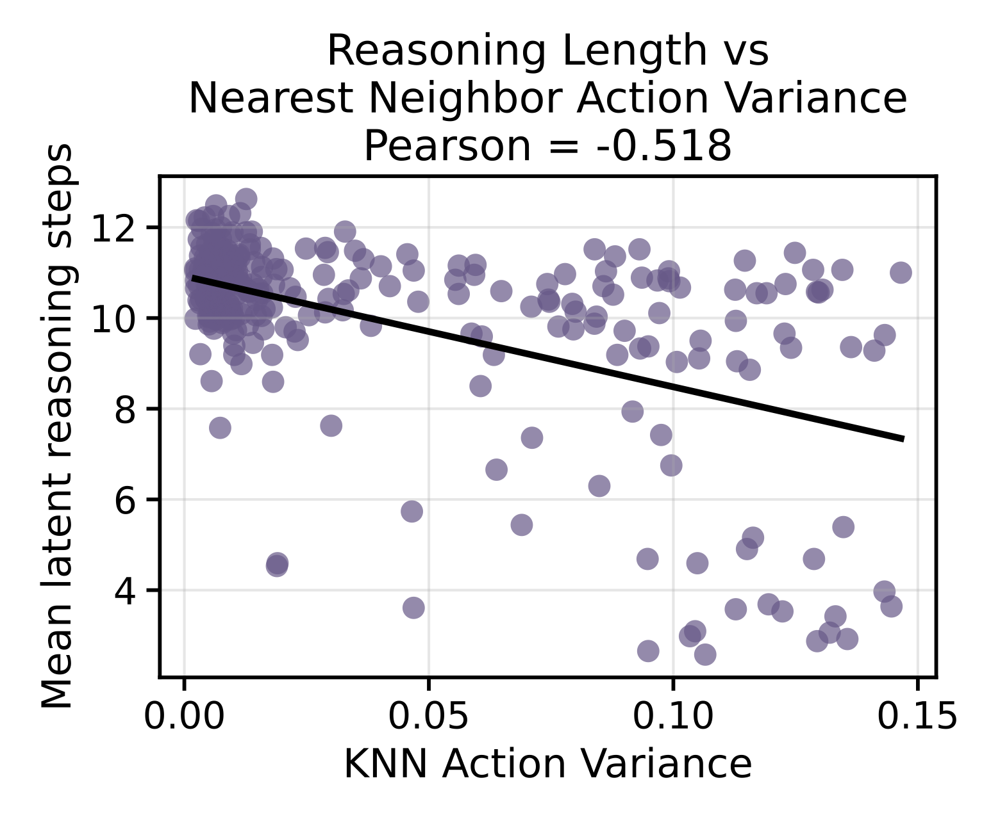
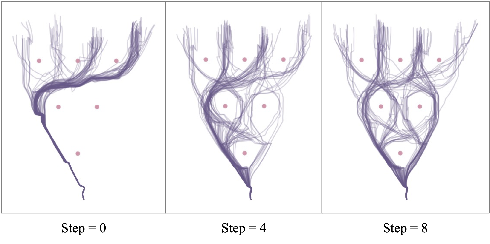

| Zero-Shot | Finetuned | |||||
|---|---|---|---|---|---|---|
| cube-bowl | pen-mug | peg-hole | clean-table (1/3) | clean-table (2/3) | clean-table (3/3) | |
| DP | 0.40 | 0.25 | 0.30 | 0.80 | 0.55 | 0.25 |
| LMP-π | 0.65 | 0.55 | 0.70 | 0.95 | 0.95 | 0.55 |
Analysis
We ablate the factors that contribute to LMP's performance and study the mechanism behind iterative and adaptive reasoning.
Does iterative computation help?
We compare LMP-π to two non-iterative latent-space baselines: a one-step Gaussian VAE Policy and VQ-BET (a behavior transformer with a residual VQ-VAE, whose two-level hierarchy makes it effectively non-iterative). LMP consistently outperforms both on D3IL and RoboMimic, indicating that fixed-length latent representations lack the granularity needed for complex manipulation tasks.

Single-task success on D3IL and RoboMimic. Iterative computation yields higher performance.
Does compression improve performance?
We ablate compression strength via the decoder variance schedule. A smaller σmin penalizes wrong predictions more heavily, yielding shorter latent traces. Reducing compression (larger σmin) hurts performance across LIBERO tasks, showing that parsimonious allocation of latent-step compute is crucial for generalization.
| σmin | all tasks | bottom-10 |
|---|---|---|
| 0.01 | 0.933 ±0.003 | 0.645 ±0.023 |
| 0.03 | 0.913 ±0.001 | 0.567 ±0.006 |
| 0.05 | 0.870 ±0.012 | 0.450 ±0.045 |
Variance-schedule ablation on LIBERO-90 (σmax fixed at 0.1).
Too little compression causes the decoder to ignore the latents; too much forces overly short traces and raises reconstruction error — a balanced schedule works best.

Effect of compression on reconstruction bias and latent utilization across truncated latent steps.

Average posterior latent length over training for different variance schedules.
Does the model adaptively allocate test-time compute?
We visualize the number of latent steps generated during rollouts, averaging over 64 latent samples per observation to reduce variance. The model uses fewer reasoning steps when the gripper is engaged — e.g. during grasping and release in clean-table, or the hand-over in RoboMimic transport. Each video below shows the rollout alongside a bar indicating the reasoning tokens generated at each step.
Real Robot (DROID)
Simulation
Probing
We run a probing experiment: a block is manually slid through the open gripper while we query the policy for the number of reasoning steps at each position. The policy's reasoning length shifts with the block's configuration relative to the gripper.
Quantitatively, we find reasoning length to be negatively correlated with nearest-neighbor action variance — the model reasons more when the local action distribution is more multimodal.

Reasoning length vs. nearest-neighbor action variance (Pearson = −0.518).
Reasoning and multimodality
We plot rollouts on the D3IL avoiding taskas we manually truncate the maximum number of latent steps at test time. The policy becomes effectively deterministic as the budget reduces to zero, yet it remains mode-seeking rather than mode-averaging. We attribute this to training with reinforcement learning rather than supervised learning.

As the maximum number of latent steps is truncated, the model exhibits mode-seeking behavior.